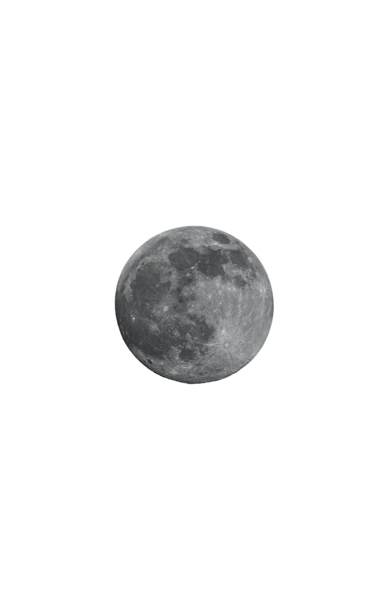
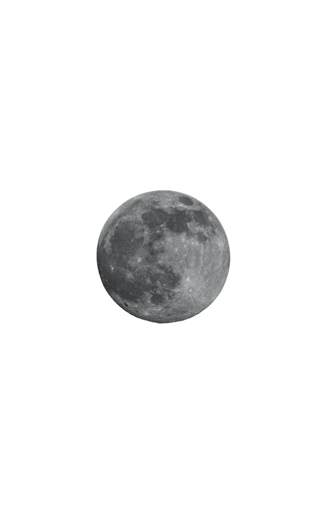

Faisal Jamschidi.
Ein Informatik Student.



auf meiner ersten Portfolio Seite.

Während meines Studiums habe ich umfassende Erfahrungen in der Anwendung verschiedener Office-Programme gesammelt, insbesondere in Excel, das sich als äußerst hilfreich erwiesen hat.

Ich habe eine Vorliebe für Webentwicklung und nutze mein erworbenes Wissen aus der Universität, um theoretische Konzepte in die Praxis umzusetzen. Dabei kommen hauptsächlich HTML, CSS und Javascript zum Einsatz. Zur Optimierung meiner Arbeitsprozesse greife ich auf CSS Libraries wie Bootstrap oder Tailwind CSS zurück. Zudem arbeite ich gerne mit Frameworks wie jQuery, um effiziente und ansprechende Webseiten zu gestalten. Momentan erweitere ich meine Kenntnisse um das React Framework, welches sich besonders für die Entwicklung von Webanwendungen und -applikationen eignet.